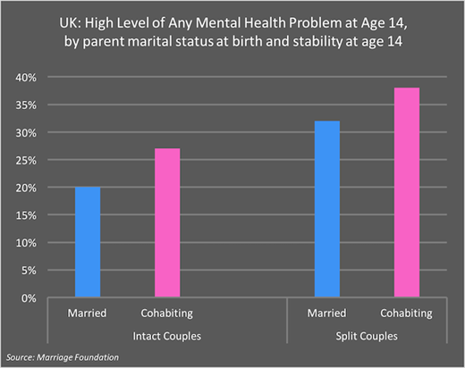

Welcome to EINTY Multimedia Project!
Many studies have discovered the strong correlation between familial relationships and mental health issues, highlighting the importance of each. Everything I Never Told You brings these issues to light by showcasing how the crumbling of family relationships leads to profound effects on the members’ mental health. This is not just a matter of fiction, as studies have shown a large number of children suffer from mental well-being problems because of their family and need intervention in order to stay healthy.
One of the main characters of the book, Lydia, had severe mental health issues due to the prolonged effect of her parental expectations and the lack of honesty throughout the family. She continued to hide her true feelings and emotions, which eventually boiled over into tragedy as she could no longer handle it. The entire story serves as a platform to call attention to not only teen mental health but also to the impact of poor familial relationships on teens. Overall, the mental health of both teens and adults is greatly impacted by the state of relations between family members, which is something that we will cover throughout our PBL.

Key Statistics
There is a very clear correlation between familial relationships and mental health. The state of a family’s communication and well-being significantly impacts each member’s health, both physically and mentally, according to many reputable studies. As reported from a study by The Institute of Health and Equity, childhood circumstances like “[...] poor attachment, neglect, abuse, lack of quality stimulation, [and] conflict and family breakdown” can negatively affect future social behavior, education outcomes, and overall mental health. This conclusion can be directly tied to the book, specifically to the character Hannah, because she clearly is an afterthought to the family, which played a key role in her mental well-being.
Another study by The New Savoy Partnership Conference in London concluded that most children attending child and adolescent mental health services found that family relationship problems were the biggest problem. These two studies just scratch the surface of this issue. Overall, there is a clear connection between familial relationships and children’s mental health, making it easy to relate these studies to the book Everything I Never Told You.
Case Studies
Family relationships—marital, intergenerational, and sibling—are vital for well-being throughout life, with their quality and diversity shaping health outcomes. Middle-aged adults often face stress when caring for aging parents, which can affect mood and cortisol levels. Social networks strongly influence physical and mental health through pathways like support, influence, engagement, and resource access, yet research often overlooks the broader social context.
Grandparent coresidence is common and varies by demographic, sometimes increasing depressive symptoms among single grandparents. Marital quality also matters: low support and high strain can raise inflammation, especially in women. Modern families show diverse living arrangements, including multigenerational households, which grew during economic downturns. Intergenerational ambivalence—mixed positive and negative feelings—can harm psychological well-being, with negative components most impactful.
Finally, the life course perspective emphasizes studying individual trajectories over time, a shift from earlier sociological neglect.
Character Analysis
Lydia is the main central figure in Everything I Never Told You. She is a deeply conflicted teenager whose identity is shaped by her parents’ expectations. Lydia’s life is filled with pressure to fulfill her mother’s academic ambitions and her father’s desire for social acceptance, and she quickly becomes the family’s “favorite child” while silently struggling with isolation, anxiety, and an identity crisis.
Lydia’s mental health has been degrading as she continues to maintain the act of perfection while silently falling apart, leaving her unable to honestly communicate her feelings. This dynamic shows how parental expectations and lack of open dialogue can fracture family relationships, creating an environment where emotional needs go silent, and voices aren’t properly heard.
Historical Context
Across many time periods in history, families have struggled with social expectations and pressure to maintain a certain outward image. Open conversations about emotional well-being were very rare, which left many people, a large portion of whom were teens, to deal with stress and identity challenges on their own. Cultural norms around parenting, success, and communication also shaped how families interacted and how children and teens developed. These historical patterns help explain why many members of the Lee family in Everything I Never Told You find it difficult to communicate their needs. This is also a good indicator as to why the family’s relationships slowly deteriorated, highlighting the historical trend for emotional struggles to remain unspoken.